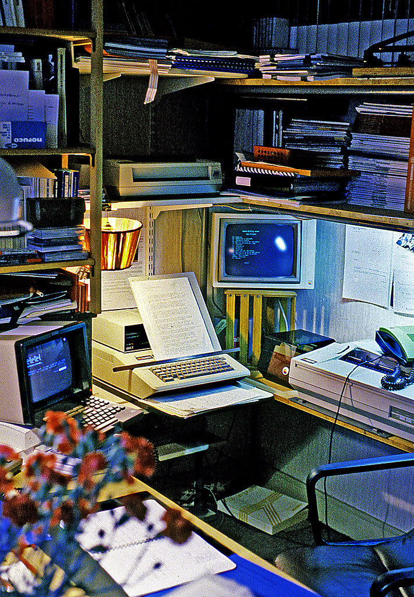

Vintage Ektachrome by Jean Paul Margnac
A free-lance consultant’s desk in 1982 : Apple II personal computer, display screen in caracters mode, dot printer, daisy wheel printer, the famous french videotext ‘Minitel’ and a lot of floppy-disks …
Voici les outils avec lesquels la bureautique a démarré : un ordinateur Apple II, un Minitel et une imprimante à marguerite, une imprimante matricielle, un écran en mode caractères et beaucoup de disquettes …
Source : https://www.flickr.com/photos/jean-paul-margnac/1361529069